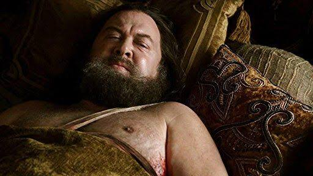
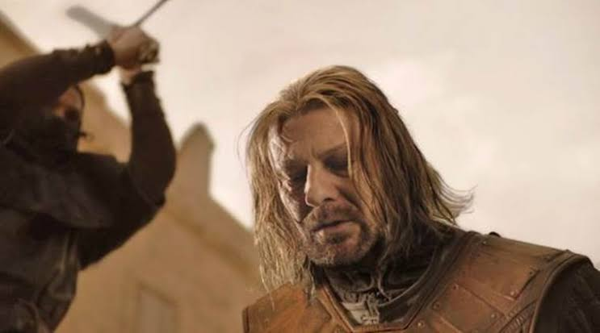
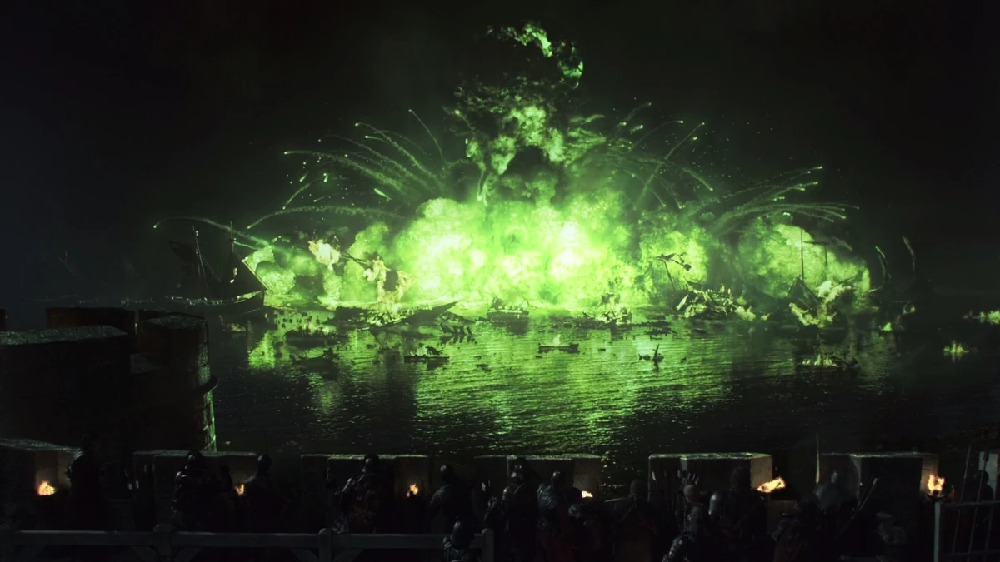
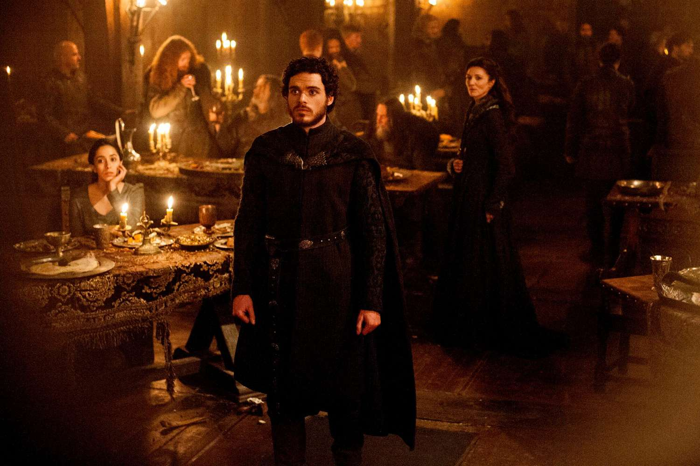
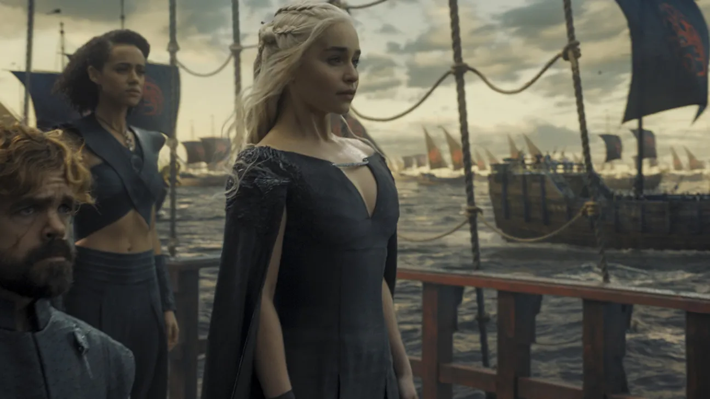
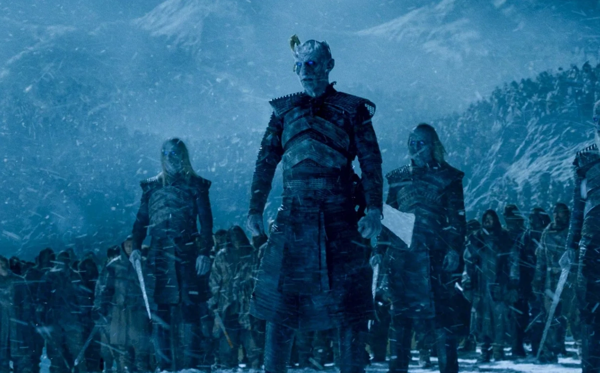
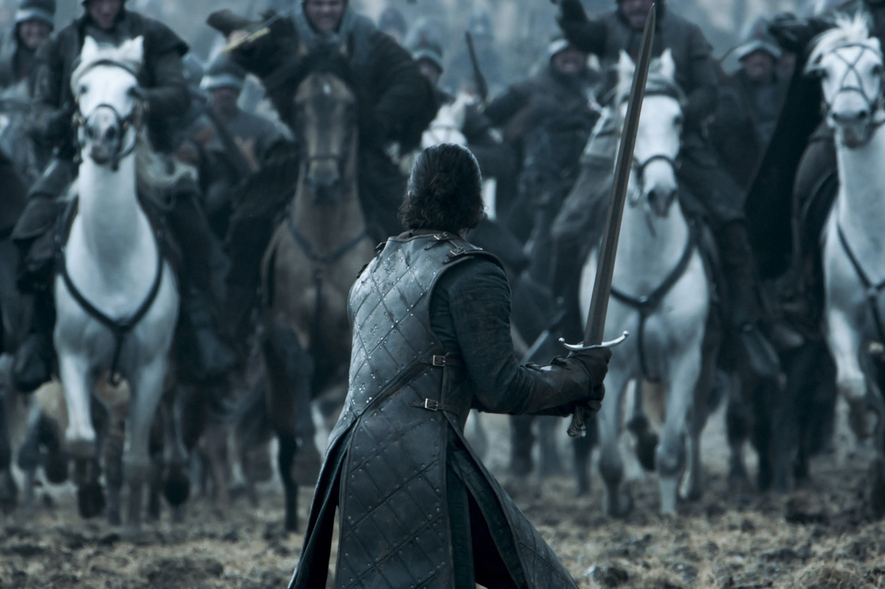
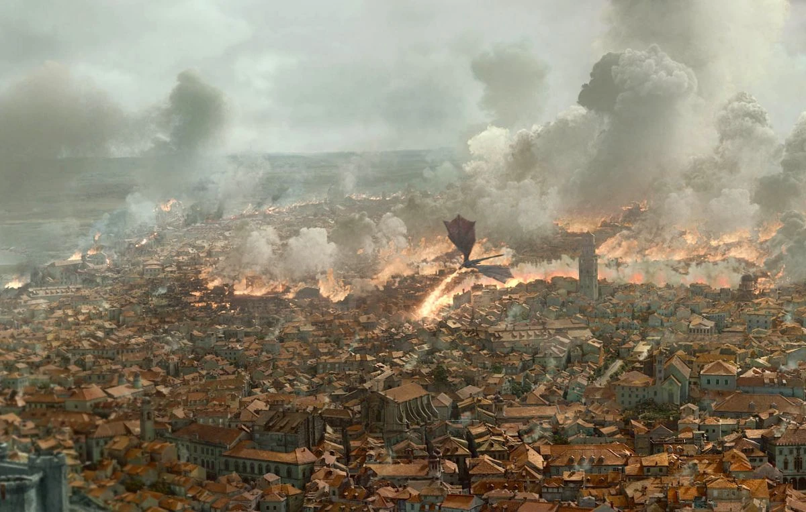
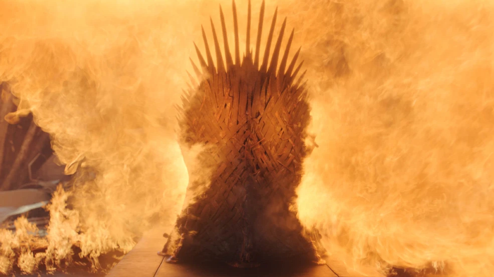

the story behind the war
Follow the choices, betrayals, alliances and consequences that turn the struggle for the Iron Throne into a chain of events no one can fully control.

Robert Baratheon’s death removes the fragile protection that had kept rival ambitions under control. Ned Stark’s investigation, Cersei’s fear of exposure and the question of succession all collide in this moment. What looks like an accident becomes the opening move of the political chain that eventually tears the realm apart.
VIEW DETAILS ↗
Ned Stark’s execution changes the story from a court investigation into a continent-wide struggle. Robb’s decision to march south, Arya’s escape and Sansa’s captivity all grow out of the same shock. The event proves that even a respected lord can be sacrificed when competing claims to power become more important than law.
VIEW DETAILS ↗
The Blackwater is where King’s Landing nearly falls before Tyrion’s preparations help save it. The battle strengthens the Lannister position, damages Stannis’s campaign and establishes Tyrion as a serious political and military thinker. It also shows how one carefully prepared weapon can alter the outcome of a much larger attack.
VIEW DETAILS ↗
After the Stark cause suffers devastating losses, the North does not simply disappear from the story. Hidden loyalties, surviving members of House Stark and resistance movements keep the idea of independence alive. The storyline gradually turns survival into restoration, showing that political power can be lost without loyalty being forgotten.
VIEW DETAILS ↗
Daenerys finally brings the Targaryen struggle back to Westeros after building power across the Narrow Sea. Her dragons and armies give her a realistic path to the throne, but her arrival also creates a clash between inherited claim and the support of the people and leaders already living in Westeros.
VIEW DETAILS ↗
The Wall’s fall changes the scale of the entire story. The political struggle becomes secondary to humanity’s survival as the Army of the Dead moves south. Characters who spent years fighting each other are forced to cooperate, while Jon and Daenerys must convince skeptical leaders that an ancient threat is now real.
VIEW DETAILS ↗
Jon Snow’s rise is tied to battles that make him increasingly important to the future of the North. His leadership earns respect, but his victories also attract attention from people who question his identity and authority. The storyline builds toward the revelation that Jon’s place in the world is far more complicated than he believed.
VIEW DETAILS ↗
The fall of King’s Landing should have been the final step toward victory, but the destruction of the city changes the meaning of that victory. The surviving leaders realize that defeating an enemy is not enough if the methods used make peaceful rule impossible. Former allies begin to reconsider who should hold power.
VIEW DETAILS ↗
The destruction of the Iron Throne ends the object that motivated generations of conquest. With the symbol of absolute monarchy gone, the surviving leaders experiment with a different way of choosing a ruler. After so much violence, the future depends less on possessing a chair and more on reaching an agreement.
VIEW DETAILS ↗